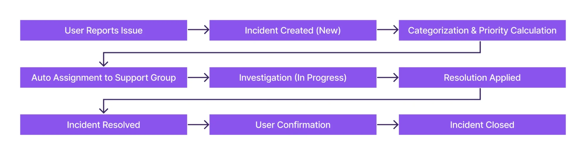
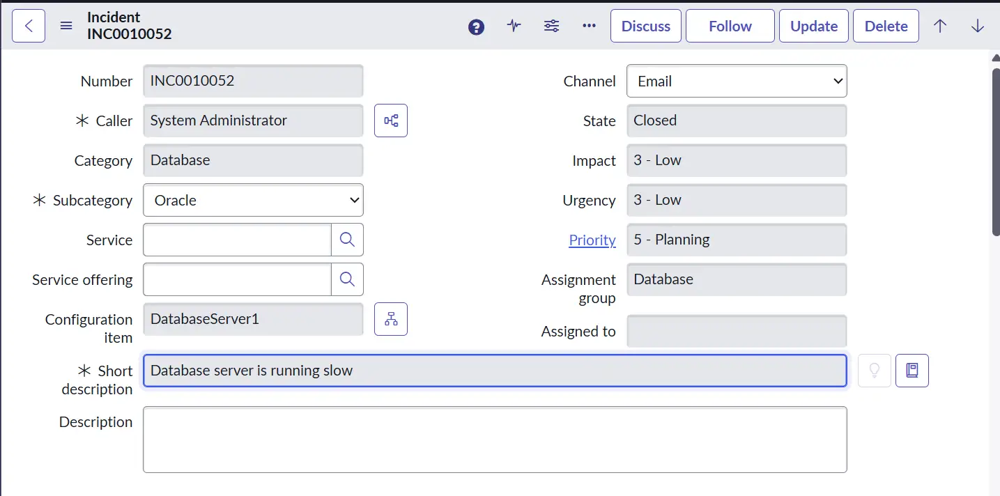
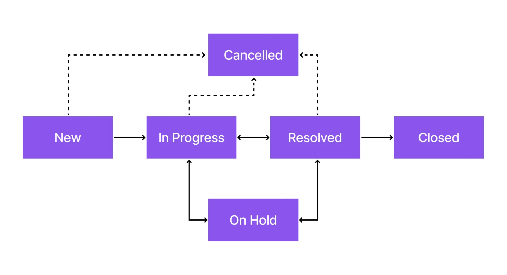
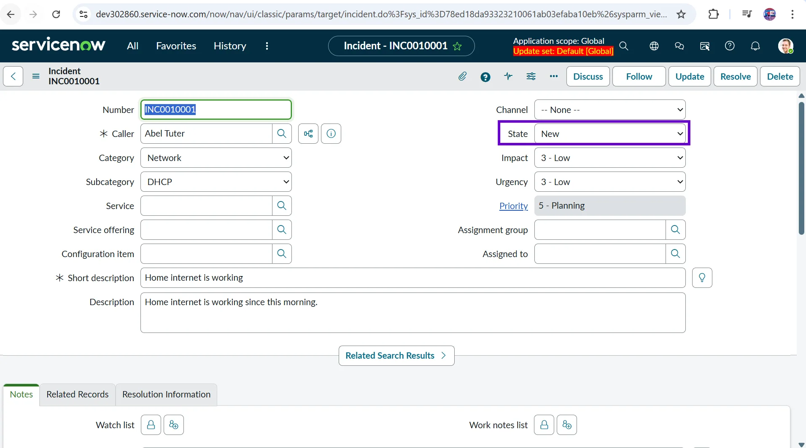
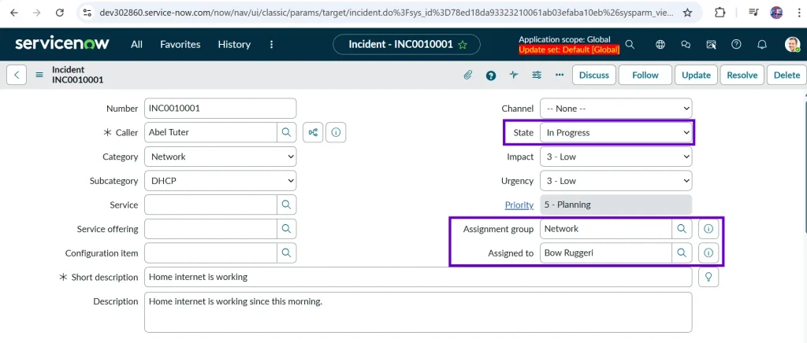
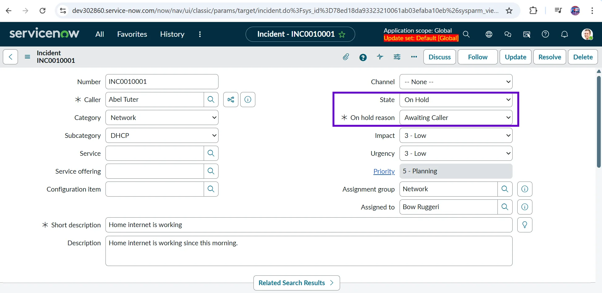
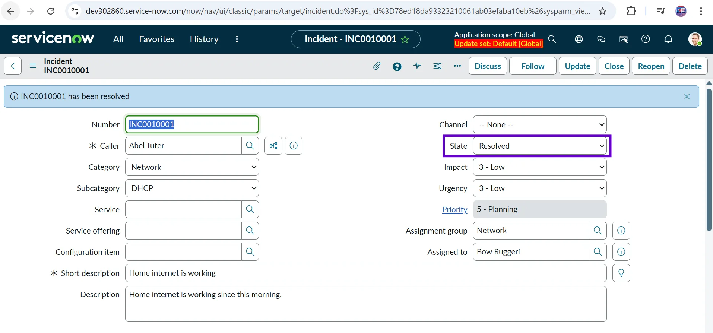
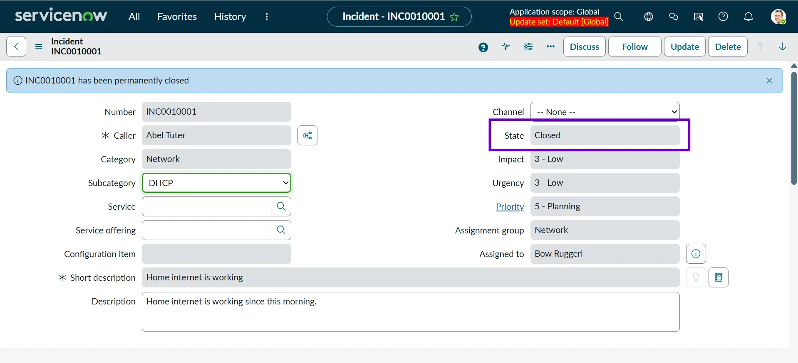
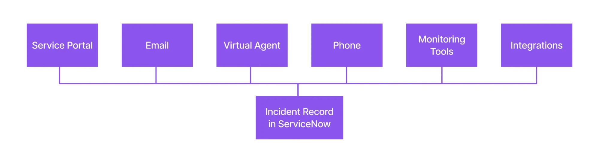

Modern businesses run on digital services – from email and collaboration tools to customer-facing applications and critical backend systems. When these services work smoothly, employees stay productive, and customers remain satisfied. But the moment a service slows down, becomes unavailable, or behaves unexpectedly, the business feels the impact immediately.
This is where Incident Management plays a crucial role.
Incident Management ensures that service disruptions are identified, logged, prioritized, and resolved as quickly as possible – so normal business operations can be restored with minimal impact. ServiceNow provides a powerful, centralized platform to manage this entire lifecycle efficiently, supported by automation, SLAs, and intelligent workflows.
In this article, we’ll start with the basics and then explore how Incident Management works in ServiceNow, including key components, automation, and real-life use cases.
What Is a Service?
According to ITIL v4 (Information Technology Infrastructure Library), Service is a means of enabling value co-creation by facilitating outcomes that customers want to achieve, without them having to manage specific costs and risks.
In simple terms, a service is anything that delivers value to a user or business without them having to worry about how it works behind the scenes.
Example: As a mobile network user, you simply use the service to stay connected with your family and friends. You don’t have to worry about the technical details – such as servers, network towers, or the technology behind it because all of that is handled for you in exchange for a small fee.
Other examples of services include:
- Email service
- VPN access
- Payroll system
As a real-life example, we all use YouTube to watch videos for entertainment and learning, without needing to understand any of the technical details working behind the scenes. From a user’s perspective, YouTube is simply providing a video streaming service.
Other everyday examples of services include:
- Instagram – a social media service.
- WhatsApp – a messaging and calling service.
- Home Internet – a connectivity service.
Each service is made up of multiple components – applications, servers, databases, networks, and people. As long as the service is available and performing as expected, users can continue their work without interruption.
What Is an Incident?
An incident is an unplanned interruption to a service or a reduction in its quality. In other words, when a service is not working as expected, an incident occurs.
Imagine trying to call a friend to share the good news that you cleared ServiceNow certification, but your mobile network is unavailable. This situation is considered an incident because there is an unplanned interruption in the network service.
Other examples:
- Email service is down
- VPN access is slow
- Users cannot log in to an application
- Printer is not working
A real-life example of an incident may be learning ServiceNow Agentic AI using YouTube, but when you try to access the website, it keeps crashing. Since the YouTube service is unavailable, this situation is considered an incident.
Other real-life examples:
- Instagram is down.
- You are not able to send or receive messages on WhatsApp.
- Your home internet connection is working slowly.
The key point is that an incident focuses on restoring the service quickly, not on finding the root cause.
What Is Incident Management?
In large organizations, hundreds or even thousands of incidents can be reported every day. Not all incidents have the same level of impact – some may affect a single user, while others can disrupt critical business services. Because of this, incidents must be handled in a structured and prioritized manner.
Incident Management is a formal process used to log, track, prioritize, and resolve incidents as quickly as possible in order to restore normal service operations. The focus is not on finding the root cause, but on bringing the service back to normal with minimal disruption.
The primary objective of Incident Management is to minimize business impact by restoring services as fast as possible. In many cases, this may involve applying temporary workarounds or using existing knowledge articles to resolve the issue quickly.
A well-defined Incident Management process ensures that:
- Issues are captured in a centralized system.
- Ownership of incidents is clearly defined.
- High-impact and critical incidents are prioritized appropriately.
- Service Level Agreements (SLAs) are tracked and met.
- Communication with users and stakeholders remains consistent.
In simple terms, Incident Management helps organizations stay operational, even when things go wrong.
Why Is Incident Management Important?
As discussed earlier, Incident Management is responsible for logging, tracking, prioritizing, and resolving incidents in a structured way. Without a defined Incident Management process, organizations would struggle to handle issues efficiently, leading to confusion, delays, and unnecessary escalations.
If incidents are not logged properly:
- Users won’t know how to report issues.
- Service desk teams won’t be able to prioritize incidents.
- Technical teams may not receive complete or timely information.
- Critical issues could be overlooked.
Imagine an organization receives two incidents on the same morning:
- One incident is raised by an Analyst.
- Another incident is raised by the Managing Director.
In both cases, their laptops are not turning on.
Without an Incident Management process, the service desk would have no structured way to assess impact and urgency, making it difficult to determine which issue requires immediate attention.
With Incident Management in place, factors such as business impact, user role, and urgency are evaluated to prioritize incidents correctly. As a result, the service desk can clearly identify that the Managing Director’s incident carries a higher priority and must be addressed first.
Incident Lifecycle
The incident lifecycle defines the journey an issue takes from the moment it is reported until it is fully resolved and closed. Understanding this lifecycle helps both support teams and stakeholders know what happens at each stage and ensures incidents are handled in a structured, transparent, and efficient way.

Key Components of Incident Management in ServiceNow
Incident Management in ServiceNow is built on a set of core components that work together to ensure incidents are logged correctly, prioritized appropriately, and resolved efficiently. Each component plays a specific role in maintaining visibility, accountability, and consistency throughout the incident lifecycle.
Understanding these components is essential for anyone working with Incident Management, as they form the foundation of how incidents are handled on the platform.
Incident Record
The Incident record is the central element of the Incident Management process in ServiceNow. It acts as a single source of truth for everything related to an incident from the moment it is reported until it is resolved and closed.
All important information about the issue is captured in the Incident record, enabling service desk agents, support teams, and stakeholders to clearly understand:
- What the issue is
- Who is affected
- How critical it is
- Who is responsible for resolving it
- What actions have been taken so far
Because every update, note, and status change is recorded here, the Incident record ensures transparency, traceability, and effective communication across teams.
It captures critical details such as: Caller, Category, Impact, Priority, Assignment Group, State, Work Notes, etc.
This is what an incident record looks like in ServiceNow:

- Caller: The user who is affected by the issue or reported the incident. He can report issues using the self-service portal of ServiceNow, sending an email to the ServiceNow mailbox, calling the Service Desk, or using a ServiceNow Virtual Agent (chatbot).
- Category / Subcategory: This helps label the issue so it reaches the right team quickly.
For example, if your internet at home is not working, you would report it as an “Internet issue” instead of a “Laptop issue,” so the problem goes directly to the correct support team.
- Impact and Urgency: These help decide how serious the issue is and how fast it needs to be fixed.
- Impact answers: How many people or services are affected?
- Urgency answers: How quickly does this issue need attention?
For example, if the office Wi-Fi is down for everyone, it’s more urgent than one person having a slow internet connection.
In another example, both a Managing Director and an Analyst have laptop issues. The impact and urgency of the Managing Director’s problem are higher because it affects critical business decisions, whereas the Analyst’s issue may impact only individual work.
- Priority: Determines the order in which incidents should be resolved. In ServiceNow, priority is automatically calculated based on Impact and Urgency, so the most critical issues are handled first without manual decision-making.
By combining impact and urgency, ServiceNow ensures fair and consistent prioritization across all incidents.
- Assignment Group: The support team that is responsible for fixing the incident. Once an incident is logged, it is assigned to a specific group based on the type of issue – such as Network, Database, Application, or End User Support.
Assigning the incident to the correct group is critical because it ensures the issue reaches the people who have the right skills and access to resolve it quickly.
Imagine your home internet is not working. If you contact your internet service provider and your incident is sent to the billing team instead of the network support team, the issue will not be resolved quickly. The billing team doesn’t have the tools or expertise to fix connectivity issues, so the request will need to be transferred, causing delays and frustration.
- State: Shows the current stage of the incident in its lifecycle, and helps everyone understand what is happening with the issue at any given moment. It indicates whether the incident is newly reported, being worked on, waiting for some input, or already resolved. We will discuss more on Incident States in the next section.
- Work Notes and Comments: These are used to record updates about an incident, but they serve different purposes.
- Work Notes are for internal use by support teams to document troubleshooting steps, technical findings, and handover details.
- Comments are visible to the user and are used to share status updates or request information.
Imagine your home internet is not working and you contact your service provider. A technician may internally note: “Checked router configuration, restarted modem, escalated to network team.” This is similar to Work Notes, which help internal teams understand what has already been done.
At the same time, you receive a message saying: “We are investigating the issue and will update you shortly.” This is similar to Comments, which keep the user informed without exposing technical details.
Incident States
Incident states represent the different stages an incident goes through from the moment it is reported until it is fully resolved and closed. Each state helps the service desk, support teams, and users clearly understand what is happening right now and what to expect next.
To make this easier to understand, let’s use a simple real-life example: your home internet is not working.

New
The incident has been logged and is waiting to be picked up by a support team. This is the state of the incident ticket when it is first created. It also means it hasn’t been picked by any team yet.
For example, you notice your home internet is not working and raise a complaint with your internet service provider. The incident ticket is created in their system, but no technician has started working on it yet. At this stage, the incident is in the New state.

In Progress
When an incident is in “In Progress” state, it means it is actively being investigated or worked on by the support team.
Sticking to the example from earlier, a support engineer starts checking your connection, reviews logs, or asks you to restart the router. The issue is now being actively worked on, so the incident moves to In Progress.

On Hold
Work is temporarily paused due to a dependency, such as waiting for user input, vendor support, or a scheduled activity. When a technician sets the state to “On Hold”, the “On hold reason” field becomes visible and mandatory. That means the technician has to give a valid reason to put the incident ticket on hold.
In the same example, the support team asks you to share router details or schedules a technician visit for the next day. Since they are waiting for input or action from the Caller, the incident is placed On Hold.

Resolved
The Resolved state indicates that the technician has fixed the issue and the service is working again. The caller is informed that the problem has been resolved and is given the option to reopen the incident if the issue still persists.
In our example, the technician resets the connection or replaces faulty equipment, and the caller’s internet starts working again. The support team marks the incident as Resolved, indicating the issue has been fixed.

Closed
In this state, the incident is formally completed, and no further action is required. The caller cannot reopen the incident, and if he faces the same issue again, he will have to raise a new incident ticket. Also, everything becomes read-only on the incident record, which means nobody can make changes in a “Closed” incident (except admins).
In the example, after confirming that your home internet is working properly for some time, the service provider closes the ticket. The incident is now in the Closed state, and the incident is considered complete.

Priority Calculation
In any organization, not all incidents are equally important. Some issues can wait, while others need immediate attention to prevent a major impact on the business. This is why priority calculation is a critical part of Incident Management in ServiceNow. It ensures that the most important issues are addressed first.
In ServiceNow, priority is typically calculated using the formula: Impact * Urgency = Priority.
- Impact measures how many users or services are affected.
- Urgency indicates how quickly the incident needs to be resolved.
| Impact / Urgency | High Urgency | Medium Urgency | Low Urgency |
| High Impact | Priority 1 | Priority 2 | Priority 3 |
| Medium Impact | Priority 2 | Priority 3 | Priority 4 |
| Low Impact | Priority 3 | Priority 4 | Priority 4 |
This structured approach ensures that incidents affecting critical services or a large number of users are addressed before lower-impact issues, helping support teams focus on what matters most.
What Each Priority Means
- Priority 1 (Critical): A major service outage or severe degradation impacting business operations (production system down). Immediate action is required.
- Example: The company’s email system is completely down for all employees. No one can send or receive emails, and there is no alternative communication method available. Business communication is severely impacted, so this is treated as a Priority 1 incident.
- Priority 2 (High): A significant issue affecting multiple users or a key function, but a workaround may exist.
- Example: The email system is not working for a large department, but affected users can temporarily use an internal chat tool to communicate. The issue impacts many users, but there is a temporary workaround, so it is a Priority 2 incident.
- Priority 3 (Medium): A moderate issue affecting a single user or a non-critical service with no major business impact.
- Example: One employee is unable to send emails, but the rest of the organization is working fine. The user can temporarily use another device or ask a colleague to send emails on their behalf. This is treated as a Priority 3 incident.
- Priority 4 (Low): A minor issue, request, or inconvenience with minimal impact and flexible resolution timelines.
- Example: An employee reports that email notifications are delayed, but emails are still being delivered. The issue is inconvenient but does not stop work, so it is classified as a Priority 4 incident.
Real-Life Scenario Example
Imagine two issues reported at the same time:
- Issue 1: The company VPN is down for all employees.
- Issue 2: One employee is unable to connect a personal printer.
The VPN issue has a high impact (many users affected) with high urgency (business cannot function without it), so it becomes a high-priority incident. However, the printer issue has low impact and lower urgency as it is affecting only one employee, so it is assigned a lower priority.
Using this model ensures consistent decision-making, faster resolution of critical issues, and effective Service Level Agreement (SLA) management.
Assignment Groups and Ownership
Once an incident is logged and its priority is determined, the next critical step is to ensure it reaches the right support team. In ServiceNow, this is handled through Assignment Groups, which define who is responsible for working on and resolving the incident. Clear ownership ensures that incidents do not sit unattended or get passed around unnecessarily.
ServiceNow can automatically route incidents to the correct support group based on:
- Category: Routes incidents based on the type of issue (e.g., Email, Network, Hardware).
- Configuration Item (CI): If the incident is linked to a specific CI (like an Email Server), it can be routed to the team that owns that CI.
- Service: Incidents related to a business service (like Email Service) can be assigned to the service owner’s support group.
- Location: Users from different locations may be supported by different local IT teams.
- Script / Automated Logic: Advanced logic can be used to assign incidents based on custom conditions.
Real-Life Example
Let’s continue with the Email service issue example:
- If the Email service is down for the entire organization, the incident should be routed to the Messaging or Email Infrastructure team.
- If the issue is related to a specific email server (CI), ServiceNow can automatically assign the ticket to the team that manages that server.
- If the issue affects users only in a specific office location, the ticket may be routed to the local IT support team for faster resolution.
Because the issue is of high priority, correct and immediate assignment becomes even more important. Sending this incident to the wrong team (for example, the desktop support team instead of the email infrastructure team) would delay resolution and could lead to SLA breaches and user frustration.
Service Level Agreements
Service Level Agreements (SLAs) define how quickly incidents must be responded to and resolved. They set clear expectations between IT teams and the business, ensuring critical issues are handled within agreed timelines.
In ServiceNow Incident Management, SLAs are not just static timers – they are dynamic, automated, and tightly integrated with incident priority and state.
Common SLA types used in Incident Management include:
- Response SLA: Time to acknowledge or start working on an incident.
- Resolution SLA: Time to fully resolve the incident.
- Operational Level Agreements (OLAs): Internal team commitments that support SLAs.
Real-Life Example
Sticking again with the same example, imagine the company’s email service stops working.
- If email is down for the entire organization, IT may commit to:
- Acknowledging the issue within 15 minutes.
- Restoring the service within 2–4 hours.
- If email is not working for one user, the response and resolution times may be longer because the business impact is lower.
- Acknowledging the issue within 2 hours.
- Restoring the service within 48 hours.
How Incidents Are Created in ServiceNow
Incidents in ServiceNow can be created through multiple channels, ensuring users can conveniently report issues while allowing IT teams to capture problems consistently. Regardless of how an incident is logged, all records follow the same lifecycle, workflows, SLAs, and prioritization rules – maintaining a single source of truth for incident management.
This ensures users can report issues easily. Different channels to raise an incident:
- Service Portal: Users log incidents through a self-service interface and track progress without contacting the service desk.
- Email: Emails sent to a support address automatically generate incident records with the email content captured as details.
- Virtual Agent: Users report issues via a conversational interface that can suggest solutions or create incidents when needed.
- Phone (Agent-Assisted): Service desk agents create incidents on behalf of users during support calls.
- Monitoring Tools: System alerts and threshold breaches automatically create incidents for proactive issue resolution. Example: If the CPU utilization of a server reaches 90%, raise an incident automatically for the concerned team.
- Integrations (APM, Event Management): Events from third-party tools are correlated and converted into incidents, reducing alert noise.

Now Assist in Incident Management
Now Assist brings generative AI into Incident Management, going far beyond basic automation. It helps support teams work faster and more effectively, so that they focus on more important and critical tasks.
Now Assist helps with:
- Incident Summarization: Generates concise summaries from long work notes and comments.
- Resolution Notes Generation: Drafts clear resolution statements based on the context of the ticket.
- Knowledge Article Suggestions: Recommends relevant articles based on the incident description.
Agents remain in control – they can review, edit, and approve AI-generated content before saving.
My Experience With Incident Management
Having worked extensively with ServiceNow Incident Management, I’ve also experienced older tools like HP Service Manager, BMC Remedy, and other legacy ticketing systems. The difference is significant.
In legacy tools:
- Automations were heavily script-driven or not possible.
- Customization was complex and risky.
- UI was less intuitive (It used to take a day up to a week to design a form).
- Changes required long development cycles.
ServiceNow changes this completely. With ServiceNow:
- Automations are visual and low-code.
- Flow Designer replaces complex scripts.
- Incident lifecycle is transparent and easier to configure.
- Integrations are easier.
- Reporting and dashboards are built-in.
What stood out to me the most is how ServiceNow connects Incident Management seamlessly with Problem, Change, Knowledge, CMDB, and other modules of ServiceNow – something that required heavy customization in older platforms.
With the addition of Now Assist, agents are no longer burdened with repetitive writing tasks. They can focus on solving problems rather than documenting them.
Overall, ServiceNow transforms Incident Management from a reactive ticketing system into a structured, intelligent service restoration process.
Final Thoughts
Incident management, at its core, is about one simple goal: helping people get back to work as quickly as possible when something goes wrong. ServiceNow makes this easier by bringing all incidents – whether reported through a portal, email, phone call, or monitoring tool – into one place and guiding them through a clear, structured process.
What truly sets ServiceNow apart is how it removes complexity for both users and support teams. Users don’t need to worry about how or where to raise an issue, and support teams don’t have to juggle multiple tools or disconnected processes. Everything flows through a single incident record with the right priority, ownership, and timelines automatically applied.
With features like automation, SLAs, and Now Assist, teams can spend less time on repetitive tasks and more time on actually solving problems. Over time, this leads to faster resolutions, better user experiences, and a more reliable IT environment.
In simple terms, ServiceNow doesn’t just manage incidents – it helps organizations stay productive, even when things break.